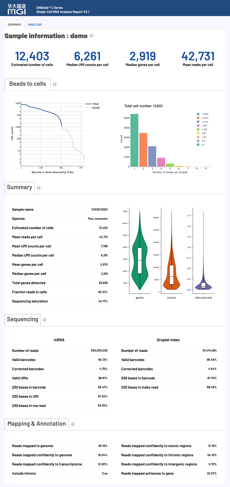
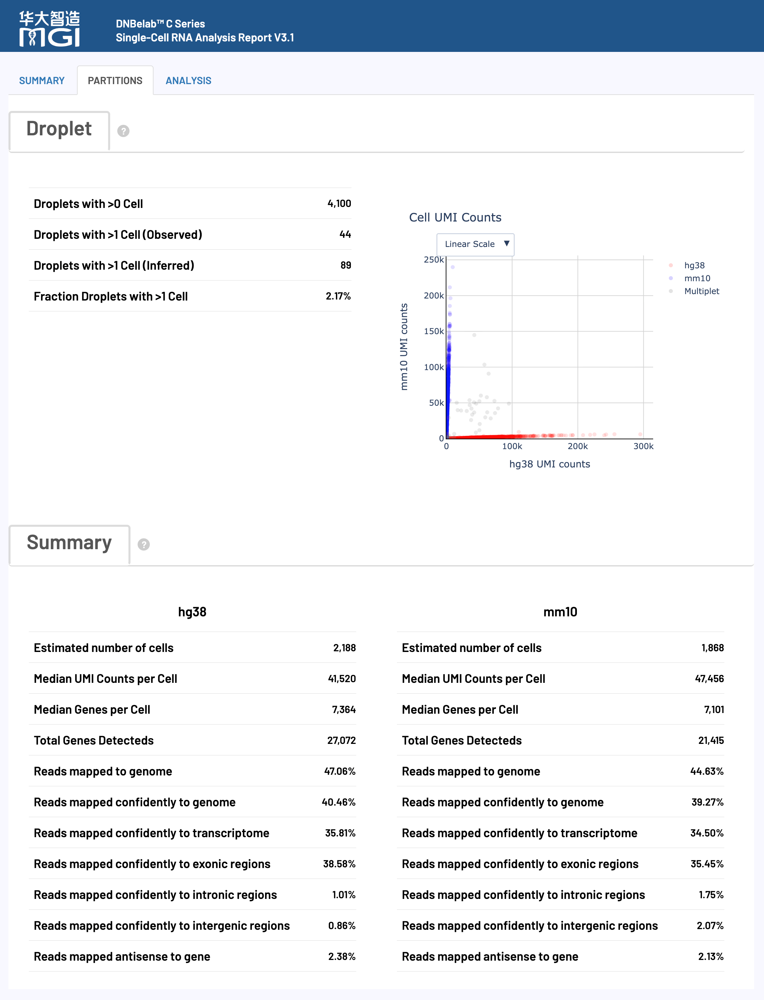

scRNA Analysis Output¶
Single-Cell RNA Sequencing Output File Guide
Overview ¶
After the single-cell RNA analysis is complete, a standardized file and subdirectory structure is generated in the specified output directory for gene expression profile analysis and cell type identification. This document describes the content, format, and intended use of each output file.
Tip: All output files use standard formats compatible with mainstream single-cell analysis tools (such as Scanpy, Seurat, etc.) and follow internationally recognized data format specifications.
Output Directory Structure ¶
.
├── analysis/ # Downstream analysis results directory
│ ├── cluster.csv # Cell clustering results file
│ ├── cell_classification.csv # Species assignment file for dual-species analysis
│ ├── marker.csv # Differentially expressed gene marker file
│ └── QC_Cluster.h5ad # AnnData object after quality control and clustering
├── anno_decon_sorted.bam # Aligned, annotated, and sorted BAM file
├── anno_decon_sorted.bam.bai # BAM index file
├── filter_feature.h5ad # Filtered feature matrix (AnnData format)
├── filter_matrix/ # Filtered gene expression matrix directory
│ ├── barcodes.tsv.gz # Cell barcode file
│ ├── features.tsv.gz # Gene/feature information file
│ └── matrix.mtx.gz # Sparse matrix file (Matrix Market format)
├── metrics_summary.xls # Analysis metrics summary table
├── raw_matrix/ # Raw gene expression matrix directory
│ ├── barcodes.tsv.gz # Raw cell barcode file
│ ├── features.tsv.gz # Raw gene/feature information file
│ └── matrix.mtx.gz # Raw sparse matrix file
├── singlecell.csv # Single-cell metadata information table
└── *_scRNA_report.html # Analysis report in HTML format
Detailed File Description ¶
Alignment and Annotation Files ¶
Core Content: Result files from aligning raw sequencing data to the reference genome, containing complete alignment information and cell barcode tags.
anno_decon_sorted.bam¶
This is the scRNA-seq alignment result file containing all raw data.
-
Core Purpose:
- In-depth Analysis and Visualization: Can be used for deep visualization in genome browsers like IGV to inspect alignment situations and splicing patterns at specific gene loci.
- Custom Analysis: Provides raw input for users who need to directly manipulate alignment-level data, such as for alternative splicing analysis, RNA velocity analysis, etc.
-
Content and Format:
- Uses the international standard BAM (Binary Alignment Map) format.
- The file is sorted by genomic coordinates and indexed (the
.baifile), allowing for fast random access. - Each read is tagged with cell origin, UMI, and gene annotation information through TAG fields.
-
Key TAG Field Descriptions:
- The BAM file uses rich TAG fields to store single-cell specific information, mainly divided into cell/molecule identifiers and gene annotations.
Cell and Molecular Identifier Tags:
Gene Annotation and Functional Tags:
anno_decon_sorted.bam.bai¶
The index file for anno_decon_sorted.bam.
- Core Purpose:
- Fast Data Access: Allows tools like IGV and Samtools to quickly jump to and read alignment data for any genomic region without loading the entire BAM file.
- Performance Guarantee: Ensures performance for all random access operations on the BAM file.
- Format and Description:
-
The index file is generated by the
samtools indexcommand. To accommodate genomes of different sizes, the pipeline automatically selects the appropriate index format (BAI or CSI).Format Type Usage Instructions BAI Format The default index format, offering the best compatibility and suitable for most analysis tools and genomes. CSI Format Automatically generated when the BAM file contains chromosomes longer than 512 Mbp (2^29-1 bp) to support very large genomes.
-
Feature Matrix Files ¶
Core Content: Single-cell gene expression count matrices, divided into raw and quality-controlled filtered data, using standard sparse matrix or AnnData format.
Filtered Gene Expression Matrix (filter_matrix/)¶
Contains the gene expression count matrix after filtering for high-quality cells, which is the core data for downstream quantitative analysis.
-
Core Purpose:
- Downstream Quantitative Analysis: Serves as the primary input for analyses such as cell clustering and differential expression analysis.
- High-Quality Data: Includes only barcodes identified as real cells, ensuring the accuracy of the analysis results.
-
Content and Format:
- Uses the standard Matrix Market Exchange (MEX) format (for more on matrix formats, see Matrix Market Format Description), consisting of the following three compressed files:
File Name Content Description barcodes.tsv.gzA list of cell IDs, identifying high-quality cells that passed QC. Each line contains one cell ID, corresponding to the column index of the matrix. features.tsv.gzA gene/feature information file, containing gene ID, name, and type. Each line contains three columns of information, corresponding to the row index of the matrix. matrix.mtx.gzThe gene expression count matrix in Matrix Market format. Contains matrix dimension information and the row, column indices, and values of non-zero elements.
- Uses the standard Matrix Market Exchange (MEX) format (for more on matrix formats, see Matrix Market Format Description), consisting of the following three compressed files:
-
Format Advantages:
- Space Efficient: The sparse matrix format (
.mtx) only stores non-zero elements, greatly saving storage space. - Highly Compatible: The MEX format is a standard in the single-cell community, compatible with almost all mainstream analysis tools like Seurat and Scanpy.
- Space Efficient: The sparse matrix format (
Raw Gene Expression Matrix (raw_matrix/)¶
Contains the raw gene expression count matrix for all detected cell barcodes (unfiltered).
-
Core Purpose:
- Quality Control Assessment: Can be used to evaluate the effectiveness of cell filtering or to perform manual filtering based on custom criteria.
- Data Integrity: Retains all original data, which can be used for deep mining or re-analysis if needed.
-
Content and Format:
- Uses the standard Matrix Market Exchange (MEX) format, with a file composition identical to the
filter_matrix/directory. - Includes all detected barcodes, including high-quality cells, low-quality cells, and background droplets.
- Uses the standard Matrix Market Exchange (MEX) format, with a file composition identical to the
filter_feature.h5ad¶
The feature matrix after cell identification and filtering, stored in AnnData (.h5ad) format. It is an alternative and supplement to the contents of the filter_matrix/ directory.
- Core Purpose:
- Python Ecosystem Integration: Serves as the standard input format for Python single-cell analysis libraries like
scanpy, seamlessly connecting to downstream analysis. - Data Integration: A single file can encapsulate the expression matrix, cell metadata, and gene metadata, making it easy to manage and share.
- Python Ecosystem Integration: Serves as the standard input format for Python single-cell analysis libraries like
- Content and Format:
- A binary format based on HDF5. For details, refer to the AnnData Format Description.
Analysis Results Directory (analysis/) ¶
Core Content: Results of downstream bioinformatics analysis, including cell clustering, differential genes, and post-QC data.
cluster.csv¶
The cell clustering analysis result file in CSV format. It contains each cell's ID, its assigned cluster, dimensionality reduction coordinates, and key QC metrics.
- Core Purpose:
- Clustering Result Visualization: Can be directly used in plotting software to visualize UMAP dimensionality reduction results.
- Basis for Cell Annotation: Provides basic grouping information for manual or automatic cell type annotation.
- Content and Format:
- Each row represents a high-quality cell, with major columns including:
Barcode: Cell IDCluster: The cluster number the cell belongs toUMAP_1,UMAP_2: The 2D coordinates from UMAP dimensionality reductionnGene,nUMI: The number of genes and UMIs detected in each cell
- Each row represents a high-quality cell, with major columns including:
cell_classification.csv (Dual-species analysis only)¶
A cell-level species assignment file generated for dual-species analyses (e.g., hg38 + mm10), in CSV format.
- Core Purpose:
- Species assignment per cell: Determines which species each cell primarily originates from.
- Mixed-cell detection: Flags potential doublets/mixed cells (
Multiplet) for downstream filtering or separate analysis.
- Content and Format:
- Each row represents one cell barcode, with major columns including:
barcode: Cell barcode IDhg38: Count assigned to human reference (hg38)mm10: Count assigned to mouse reference (mm10)call: Species assignment result (hg38/mm10/Multiplet)
- Each row represents one cell barcode, with major columns including:
Example:
barcode,hg38,mm10,call
CELL1_N2,17098,821,hg38
CELL2_N8,56978,1939,hg38
CELL5_N2,868,4216,mm10
CELL8_N2,2371,71601,mm10
CELL10_N2,1299,36697,mm10
CELL11_N1,1633,44048,mm10
CELL14_N3,110102,2919,hg38
CELL19_N1,763,19995,mm10
CELL21_N3,44712,1603,hg38
CELL27_N3,64247,90800,Multiplet
CELL31_N3,87308,2773,hg38
CELL32_N2,1871,51359,mm10
CELL36_N2,871,19635,mm10
CELL38_N3,42964,1487,hg38
CELL41_N3,360,6379,mm10
CELL42_N3,2853,74058,mm10
CELL43_N7,54863,1875,hg38
CELL44_N2,14431,638,hg38
CELL46_N3,4071,129035,mm10
CELL47_N4,1865,51515,mm10
CELL49_N2,49776,1521,hg38
CELL51_N5,1362,40817,mm10marker.csv¶
A list of differentially expressed genes (marker genes) for each cluster, in CSV format. It records information such as the significance of each gene's expression in a specific cluster and changes in expression levels.
- Core Purpose:
- Cell Type Identification: By looking up known marker genes for cell types, it allows for biological annotation of unsupervised clustering results.
- Functional Enrichment Analysis: Can be used as an input gene list for subsequent functional enrichment analyses like GO and KEGG.
- Content and Format:
- Each row represents the differential expression information of a gene in a cluster, with major columns including:
cluster: The cluster number for which the gene is a markergene: Gene nameavg_log2FC: Average log2 fold changep_val_adj: Adjusted p-value, assessing statistical significancepct.1,pct.2: The proportion of cells expressing the gene in the target cluster versus other clusters
- Each row represents the differential expression information of a gene in a cluster, with major columns including:
QC_Cluster.h5ad¶
A single-cell data object that has undergone complete quality control, dimensionality reduction, and clustering analysis, in AnnData (.h5ad) format. It integrates the upstream expression matrix with downstream analysis results.
- Core Purpose:
- Analysis Reproduction and Exploration: Contains the complete analysis workflow and results, and can be directly loaded in
scanpyfor exploratory analysis or visualization. - Data Delivery: Serves as a delivery file for final analysis results, with a clear structure and complete information.
- Analysis Reproduction and Exploration: Contains the complete analysis workflow and results, and can be directly loaded in
- Content and Format:
- Builds on
filter_feature.h5adby adding the following information:obs: Contains cell metadata such as clustering results (cluster).obsm: Contains dimensionality reduction coordinates (X_umap).uns: Contains unstructured results such as marker genes (marker_genes).
- Builds on
Analysis Metrics Summary ¶
Core Content: A summary of experimental quality assessment and statistical metrics, providing structured data quality control information.
metrics_summary.xls¶
A summary table of key analysis metrics in Excel format, providing a structured assessment of the overall quality of the experiment.
-
Core Purpose:
- Quality Assessment: Quickly evaluate core metrics such as sequencing data quality, alignment efficiency, and cell identification results.
- Results Overview: Provides a summary view of the analysis results without needing to view all files.
-
Content and Format:
- Includes three main categories of key metrics:
Metric Category Included Content Basic Statistics Total reads, valid barcode ratio, UMI quality, Q30 base quality, and other basic sequencing metrics. Cell Identification Estimated number of cells, median genes/UMIs per cell, sequencing saturation, and other cell calling results. Alignment Metrics Genome alignment rate, transcriptome alignment rate, exon/intron ratio, and other alignment statistics. - Includes recommended quality control standards for user convenience:
Recommended Quality Thresholds:
- Valid Barcode Fraction: >70%
- Q30 Base Quality: >75% (for barcode and UMI regions)
- Reads Mapped Confidently to Transcriptome: >30%
- Fraction Reads in Cells: >50% (or >30% for nuclear samples)
- Mean Reads per Cell: >15,000
- Includes three main categories of key metrics:
singlecell.csv¶
A single-cell level quality control information table in CSV format, recording detailed statistical data for each cell barcode.
-
Core Purpose:
- Fine-grained QC: Allows users to perform more detailed cell filtering and analysis based on custom criteria.
- Input for Downstream Analysis: Can be used as cell metadata input for downstream analysis tools, supporting cell filtering and bead merging operations in VDJ analysis.
-
Content and Format:
- Each row represents a cell barcode.
- Major columns include: UMI count, gene count, mitochondrial gene fraction, and whether it was identified as a high-quality cell, bead merging information, etc.
*_scRNA_report.html¶
An interactive HTML report for reviewing analysis results.
-
Core Purpose:
- Result Visualization: Intuitively displays key analysis results such as QC results, cell clustering, and marker genes in the form of interactive charts.
- Result Interpretation: Provides biological significance and technical explanations for various metrics to help users deeply interpret the data.
- Convenient Sharing: A single HTML file, easy to circulate and share.
-
Content and Format:
- Can be opened in any modern browser without an internet connection.
- For a detailed interpretation of the report, please refer to the Web Report Interpretation section below.
File Format Description ¶
Technical Specifications: Detailed descriptions of the standard formats used for output files.
Matrix Market Format (.mtx.gz) ¶
The Market Exchange Format (MEX) is a standard format used in single-cell analysis for storing sparse count matrices, offering advantages of space efficiency and high compatibility.
-
Core Advantages:
- Space Efficient: The sparse matrix only stores non-zero elements, which can greatly save storage space for single-cell data where over 95% of values are typically zero.
- Highly Compatible: As an international standard format, it can be directly read by almost all mainstream analysis tools like Seurat and Scanpy.
-
File Composition:
- A complete MEX format dataset consists of the following three files:
File Name Description matrix.mtx.gzA compressed sparse matrix file. The header contains matrix dimensions, and each subsequent line records the position (row/column index) and value of a non-zero element. barcodes.tsv.gzA compressed cell barcode file. Each line is a cell ID, and the line number corresponds to the matrix's column. The format is, for example, CELL1_N2, whereCELL1is the cell ID andN2consists of two barcodes.features.tsv.gzA compressed feature (gene) file. Each line contains information like gene ID and gene name, and the line number corresponds to the matrix's row.
- A complete MEX format dataset consists of the following three files:
AnnData Format (.h5ad) ¶
Format Overview: AnnData ("Annotated Data") is a data structure designed for matrix-like data, particularly suitable for single-cell RNA sequencing data analysis. Based on the HDF5 format, it provides efficient data storage and access capabilities.
Data Structure¶

| Component | Function | Dimensions |
|---|---|---|
| X | Main expression matrix | n_cells × n_genes |
| obs | Cell metadata | n_cells × n_obs_features |
| var | Gene metadata | n_genes × n_var_features |
| obsm | Cell multidimensional data | n_cells × n_components |
| varm | Gene multidimensional data | n_genes × n_components |
| layers | Multi-layer data | n_cells × n_genes |
| uns | Unstructured data | Any object |
Web Report Interpretation ¶
Overview: The HTML web report provides visual summaries and metric explanations for single-cell RNA sequencing results, including key performance indicators for experimental quality and downstream analysis.
The HTML web report is the main entry point for reviewing single-cell RNA sequencing results. It covers data quality control, cell clustering, marker genes, and cell type annotation, and helps users identify metrics that require further review.
Usage Notes: It is recommended to review the metrics in the order they are presented in the report.
Note: The following standards are for reference only. Actual quality assessment should consider multiple factors such as tissue type, cell state, and experimental goals. Significant differences may exist between different samples, and it is recommended to make judgments based on the specific experimental context.
Main Content and Structure of the Report¶

Detailed Explanation of Core Analysis Metrics¶
Cell Metrics ¶
Core Function: Cell identification, quality assessment, and gene expression statistics, providing key indicators of the overall effectiveness of the experiment.
Quality Control Standards:
Note: The following standards are for reference only. Actual quality assessment should consider multiple factors such as tissue type, cell state, and experimental goals. Significant differences may exist between different samples, and it is recommended to make judgments based on the specific experimental context.
| Metric Name | Recommended | Acceptable | Needs Improvement |
|---|---|---|---|
| Mean reads per cell | ≥ 30,000 | 15,000–30,000 | < 15,000 |
| Median genes per cell | ≥ 1,000 | 500–1,000 | < 500 |
| Fraction reads in cells | ≥ 60% | 30–60% | < 30% |
| Sequencing saturation | ≥ 40% | 20–40% | < 20% |
Detailed Metric Explanations:
| Metric Name | Detailed Explanation and Technical Requirements |
|---|---|
| Estimated number of cells |
|
| Species |
|
| Mean reads per cell |
|
| Median/Mean UMI per cell |
|
| Median/Mean genes per cell |
|
| Total genes detected |
|
| Fraction reads in cells |
|
| Sequencing saturation |
|
Sequencing Metrics ¶
Core Function: Basic quality assessment of sequencing data, including barcode identification rate, UMI quality, and sequencing accuracy.
Quality Control Standards:
| Metric Category | Recommended | Acceptable | Needs Improvement |
|---|---|---|---|
| Valid barcodes | ≥ 80% | 70–80% | < 70% |
| Valid UMIs | ≥ 80% | 70–80% | < 70% |
| Q30 Base Quality | ≥ 85% | 75–85% | < 75% |
Detailed Metric Explanations:
| Metric Name | Detailed Explanation and Technical Requirements |
|---|---|
| Number of reads |
|
| Valid barcodes |
|
| Valid UMIs |
|
| Q30 bases in barcode/UMI/read |
|
Note: All proportions above are calculated based on the total number of raw sequencing reads (Number of Reads), ensuring comparability and consistency across metrics.
Mapping Metrics ¶
Core Function: To assess the quality of read alignment to the reference genome, including alignment rate, specificity, and genomic region distribution.
Quality Control Standards:
| Metric Name | Recommended | Acceptable | Needs Improvement |
|---|---|---|---|
| Reads mapped to genome | ≥ 80% | 50–80% | < 50% |
| Reads mapped confidently to transcriptome | ≥ 50% | 30%–50% | < 30% |
| Reads mapped antisense to gene | < 10% | 10-30% | > 30% |
Detailed Metric Explanations:
| Metric Name | Detailed Explanation and Technical Requirements |
|---|---|
| Reads mapped to genome |
|
| Reads mapped confidently to genome |
|
| Reads mapped confidently to transcriptome |
|
| Reads mapped confidently to exonic regions |
|
| Reads mapped confidently to intronic regions |
|
| Reads mapped confidently to intergenic regions |
|
| Reads mapped antisense to gene |
|
| Include introns |
|
Note: All proportions above are calculated based on the total number of raw sequencing reads (Number of Reads), ensuring comparability and consistency across metrics.
Interactive Visualization Chart Interpretation ¶
Core Function: Provides visual summaries from cell quality control to downstream biological analysis.
Visualization Chart Group One: Cell Quality Control Analysis ¶
Barcode Rank Plot¶
Chart Function: This plot distinguishes high-quality real cells from background noise by ranking all cells by their UMI count.

How to Interpret:
- Visual Encoding: Blue line (valid cells) | Gray line (background noise) | Blue gradient area (mixed region)
- Chart Axes Explained:
- X-axis: Barcode Rank - Sorted by total UMI count in descending order (log scale)
- Y-axis: UMI Counts - Total UMI count for each cell (log scale)
- Interaction: Hover to display cell rank, UMI count, and the proportion of real cells in that segment
- Quality Assessment Guide:
- Ideal Pattern: A clear "knee point" distinguishes real cells from the background, with a steep drop in the real cell region and a flat distribution in the background region.
- Abnormal Pattern: Lack of a clear knee point (cell concentration too low), or a gradual decline (background RNA too high).
Droplet Beads Distribution¶
Chart Function: Displays the distribution of the number of captured cell barcodes (Beads) in real cell droplets.
How to Interpret:
- Theoretical Distribution: The distribution of beads in droplets theoretically follows a Poisson distribution, reflecting the statistical properties of the random capture process in the micro-reaction system.
- Actual Influences: The final distribution is affected by experimental factors such as sequencing saturation, droplet size uniformity, and cell concentration.
Cell Data Distribution¶
Chart Function: Through three separate violin plots, it shows the distribution of high-quality cells across three key quality metrics: number of genes (nGenes), number of UMIs (nUMI), and mitochondrial gene percentage (percent.mt).
How to Interpret:
- Number of Genes and UMIs: The higher the center of the distribution (the widest part), the higher the transcriptome complexity and capture efficiency of the cells.
- Mitochondrial Gene Percentage: The distribution should be concentrated at a low percentage (usually < 10-20%). A high percentage may indicate cell apoptosis or stress.

Visualization Chart Group Two: Downstream Biological Analysis ¶
Core Function: Summarizes cell clustering, differential gene identification, cell type annotation, and sequencing depth assessment.
Cluster Analysis¶
Chart Function: Uses UMAP dimensionality reduction and Louvain clustering to project cells with similar gene expression profiles into a 2D space and identify potential cell subpopulations.
How to Interpret:
- Left Plot (Cell Type Clustering): Each point represents one cell. Different colors indicate different clusters; nearby cells generally have more similar gene expression profiles.
- Right Plot (UMI Count Distribution): Uses the same UMAP layout with a color gradient for total UMI counts per cell. This view helps assess clustering reliability, such as whether specific clusters are dominated by low-quality cells.
Marker Genes Analysis¶
Chart Function: Displays the characteristic differentially expressed genes for each cell cluster, used to identify and annotate different cell types.
How to Interpret:
- Key Metrics Explained:
- P-val: P-value from the differential expression test. Smaller values indicate stronger statistical significance (commonly < 0.05 significant, < 0.01 highly significant).
- p_val_adj: Bonferroni-adjusted p-value for controlling false positives. Use this metric as the primary criterion for final marker selection.
- avg_log2FC: Average log2 fold change, indicating expression difference between the target cluster and other clusters.
- pct.1 / pct.2: Proportion of cells expressing the gene in the target cluster versus all other clusters, useful for assessing marker specificity.
- Interactive Features: Use the cluster dropdown to inspect a specific cluster, or use gene search to locate target genes quickly.
Cell Type Annotation¶
Chart Function: Labels each cluster on the UMAP plot with a cell type inferred from reference databases such as scHCL and scMCA.
How to Interpret:
- Annotation Result: Provides a possible cell type label for each cluster.
- Species Support: Human (Homo sapiens) / Mouse (Mus musculus). Cell type annotation is not provided for other species.
- Usage Notes: The automatic annotation results are for reference only. Their accuracy depends on the quality of the reference database and the similarity of the sample. It is recommended to manually verify and correct them in conjunction with marker genes.
Sequencing Saturation Curve¶
Chart Function: Assesses the adequacy of sequencing depth and data complexity, that is, whether further increasing the sequencing volume can lead to the discovery of more new genes or UMIs.
How to Interpret:
- Axes: X-axis shows mean reads per cell; Y-axis shows sequencing saturation or median genes per cell.
- Curve Trend: A flattening curve indicates sequencing is approaching saturation, so deeper sequencing is expected to add limited new information. A rapidly rising curve indicates that additional sequencing may still provide meaningful gains.
Dual-Species Cell Assignment Page (Dual-species analysis only)¶
When a dual-species reference is used (e.g., hg38 + mm10), the HTML report adds a dedicated page for species assignment and mixed-cell identification.

Chart Function: This page combines droplet-level multiplet statistics, cell-level species scatter plots, and per-species summary metrics, allowing quick assessment of species separation quality.
How to Interpret:
- Droplet overview (top-left):
Droplets with >0 Cell: Number of droplets containing at least one cell.Droplets with >1Cell (Observed / Inferred): Observed/inferred number of multi-cell droplets.Fraction Droplets with >1 Cell: Fraction of multi-cell droplets (inferred). Higher values generally indicate higher doublet risk.
- Cell UMI Counts scatter (top-right):
- X-axis:
hg38 UMI counts; Y-axis:mm10 UMI counts. - Points mainly distributed along the X-axis are typically assigned as
hg38; points mainly along the Y-axis are typically assigned asmm10. - Points with high counts on both axes are often
Multiplet(mixed/doublet) cells.
- X-axis:
- Summary panel (bottom):
- Separately reports cell count, median UMI/genes per cell, total genes detected, and mapping-related metrics for
hg38andmm10. - Large imbalance between species in key metrics may indicate issues in loading ratio, sample condition, or species separation performance.
- Separately reports cell count, median UMI/genes per cell, total genes detected, and mapping-related metrics for
- Usage Notes:
- Mark or remove
call=Multipletcells before downstream clustering. - Interpret this page together with
analysis/cell_classification.csvrather than relying on a single threshold.
- Mark or remove
Related Documentation¶
| Document | Description |
|---|---|
| scRNA Pipeline | Detailed scRNA analysis workflow |
| scRNA Parameters | Command parameter reference |
| Output Files | Return to output documentation index |
Feedback & Support
This document is continuously updated. If you find any errors or need additional information, please provide feedback. Document Version: 3.1 | Last Updated: April 2026